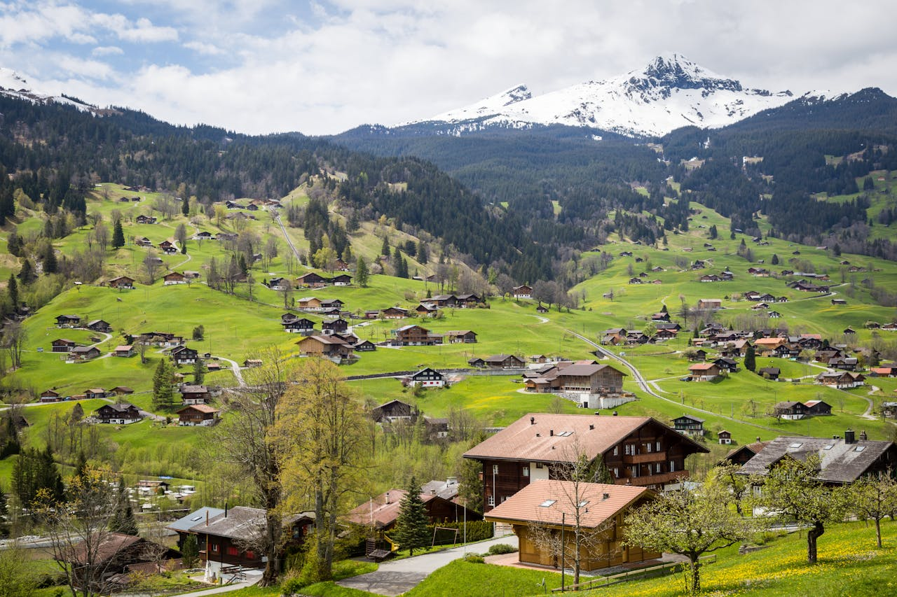
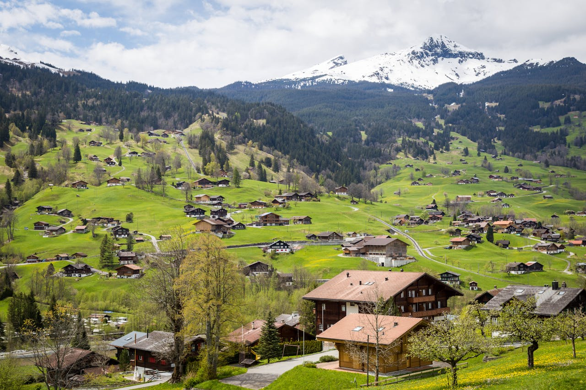

The language in Europe
The five countries that speak French are France, Belguim, Switzerland, Luxembourg, and Monaco. Despite being possibly the continent where the language emerged, the presence of the language is not so big as compared outside of the continent, as Europe also has English, German, Spanish speakers. Even so, it is still a part of the region.

 
